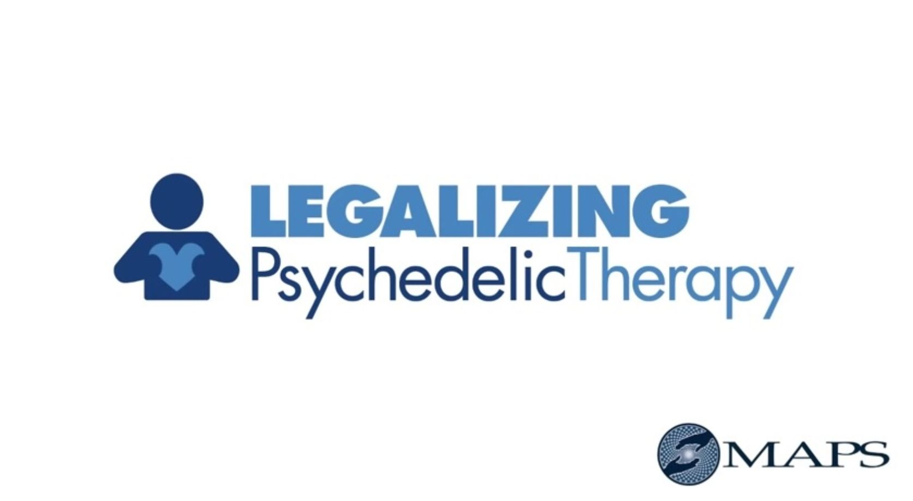

| LSD: リゼルギン酸ジエチルアミド：改善生活、心理療法、および脳。 | |
| Gareth Hamlyn | |
| (2019) | |
LSD
リゼルギン酸ジエチルアミド：改善生活、心理療法、および脳。
ガレス・ハムリンによって
©2016
目次
リゼルギン酸ジエチルアミド又 は lysergid e 現実（クイグリー と Wau n、 201 1 ）を歪ませるレクリエーション薬物使用者によって取られる幻覚剤です 。 LS D はアルバート・ホフマン、事故によっ て 193 8 年に、製薬会社のために働いてスイスの化学者によって発見されました。その発見の後に、薬物は、薬物中毒、自閉症、末期がん、および統合失調症を治療するため に 3 0 年間の実験で使用しました 。 196 5 において、薬物は、生産する違法になった所持、および薬物乱用コントロール改正の結果として販売しています 。 LS D は、わず か 3 0 マイクログラム で 1 2 時間まで持続気分や認 知- 変更する効果を得ることができる最も強力なサイケデリック薬の一つです。ほぼすべての西洋の国における薬物の生産と使用は違法であり、現在までそれには医学的に受け入れられて使用されていません。薬剤はライグラスといくつかの粒子に成長する菌である、麦角を使用して合成プロセスを経て製造されます。合成された後、薬物は、無臭、無色、そして少し苦味のある、そしてそれは、経口で摂取または皮膚から吸収することができます。薬剤は、典型的に産生され、噛むまたは飲み込むことができる薬剤に浸した吸い取り紙の上に分配されます。薬は一般的 に 199 0 年代を通じて西側諸国での十代の若者たちによって使用され、それがクラブに出席した個人、レイブ、コンサートで使用するために、今日でも、現在人気がありました。薬剤は、典型的に産生され、噛むまたは飲み込むことができる薬剤に浸した吸い取り紙の上に分配されます。薬は一般的 に 199 0 年代を通じて西側諸国での十代の若者たちによって使用され、それがクラブに出席した個人、レイブ、コンサートで使用するために、今日でも、現在人気がありました。薬剤は、典型的に産生され、噛むまたは飲み込むことができる薬剤に浸した吸い取り紙の上に分配されます。薬は一般的 に 199 0 年代を通じて西側諸国での十代の若者たちによって使用され、それがクラブに出席した個人、レイブ、コンサートで使用するために、今日でも、現在人気がありました。
LS D は、典型的には、エルゴタミン及びエルゴノビンように、麦角アルカロイドから誘導され、一般的に実験室 （ LS D、 201 6 ）に化学合成により調製された非常に強力な幻覚薬であると考えられます 。 LS D の化学構造が似ているすべての脳内のセロトニンの伝達の作用を遮断することによって効果を生み出すブフォテニン、サイロシビン、ハルミン、およびイボガインなどの他の幻覚薬、の。セロトニンの作用の阻害は正常な動作から大幅な逸脱になり、そして精神薬としての発見は、特に統合失調症、精神病疾患に類似していた精神状態を誘導するために、早期の後に、それを使用しました。
（化学の王立協会 、 201 5 ）
LS D の化学構造を示す画像。
薬は自分の脳でセロトニンおよび神経伝達を破壊することによって、ユーザーの認識を変えますが、薬の薬理学と神経経路はまだ完全に神経科医（クイグリー と Wau n、 201 1 ）によって理解されていません。神経科医は、一度薬が主に大脳皮質と青斑核に影響を与え摂取磁気共鳴画像から発見しました。大脳皮質は、個人の気分や認識に関与している脳の領域であり、青斑核は、感覚信号は、身体のすべての部分から満たしている脳の領域です 。 LS D を模倣何千年もの間、世界中の文化の両方で社会的、宗教的な儀式で使用されているメスカリンとサイロシビンのような自然な幻覚剤、の影響。
（ Devianart 201 6 ）
LS D は、一般的に吸い取り紙の中に浸され、闇市場で販売されています。これはディーラーが売り上げから利益をすることができ、それはまた、セッション中のユーザーにはあまりネガティブな結果をもたらし た 196 0 年代に販売され、使用されてい る LS D に比べて線量強度を軽減するのを助けます。
LS D の効果は摂取後時間以内にユーザーによって感じられる、と彼らは（クイグリー と Wau n、 201 1 ）撮影した投与量に応じて、最 大 1 2 時間持続することができます。薬物が腸管に吸収され、それは身体と脳全体に循環し、それがユーザーの肝臓で代謝され、そしてそれは、摂取 後 2 4 時間以内に尿路を通じて排泄されます 。 LS D の心理的影響は感情的な感覚であり、感情は一般的に薬物を取らされている特定のユーザーとのセッションに依存する、混乱と絶望に陶酔感からシフトします 。 LS D のユーザーは、色、匂い、そして音の増加強度で一回の組み合わせでの同時感情を感じて報告しています。また、ユーザーは、音や匂いの色を見ることができることを報告し、時間の知覚の典型的な損失があります。最後に、一部のユーザーは、アウト・オブ・ボディ経験と感覚を持っ報告し、幻覚は、一部のユーザーが自分の体の形状を変更したり、セッションが起こった環境内の他のオブジェクトと合併していることを感じることが原因となっています。薬の物理的効果は、食欲不振、瞳孔散大、口渇、動悸、吐き気、発汗、めまいになることがあります。
（無意識または特定の環境では、個人で撮影したとき に LS D は非常に危険な薬することができますが、それは覚せい剤、オピオイド、アルコール、またはニコチンなどの中毒性ではありませ ん クイグリー と Wau n、 201 1 ）。薬剤の効果は、ユーザの異なる個性、気分、期待、および環境の結果として異なる、および薬物の効果は、前述の要因と採取量に応じて、高度に予測不可能な変数であると考えられます。また、ユーザーは次 の1 つのセッションから、様々な効果を報告し 、 LS D に関連した死亡の大半は、薬物の摂取後の幻想によって引き起こされるパニック反応から生じます。薬剤に関連して、医学界で文書化され た2 つの長期的な副作用があります：精神病および幻覚剤は、知覚障害を持続します。これら二つの副作用は、一部のユーザーではなく、他の人に固執する理由を研究者は完全には理解していません。精神病は、薬物を使用する前に精神障害を持っていたし、心理的な問題の家族歴を持っていたことがない個体で発生しています 。 LS D の使用に起因する精神病は数年から数十年に続くことができる気分のむら、両方の認知とコミュニケーション能力の喪失、および幻覚を挙げることができます。また、知覚障害またはフラッシュバックを持続幻覚剤は、同様に数十年に年から一部のユーザーでは時間に数秒間持続することが報告されており、彼らは移動するオブジェクトを次のように明るい点滅し、トレイルの原因と変更されたビジョンを伴います。
ブラックマーケット のY で販売されてい る LS D が過去に販売された薬物の平均投与量より少ない弱いと見なされるので、薬物から見て負の副作用は、（今日あまり一般的であると考えられていま す クイグリー と Wau n、 201 1 ）。今日闇市場で販売されてい る LS D の用量強度は 、 10 0〜 20 0 マイクログラムの間であっ た 196 0 年代における薬物の用量強度と比較して典型的に は 2 0〜 8 0 マイクログラムの間です。かつて の LS D の使用からフラッシュバックは、マリファナなどその他のレクリエーション薬物の使用、次報告されており、およびセロトニン再取り込み阻害薬は、幻覚剤持続知覚障害を配合できるという報告があります。
（ブリット・ラボ 、 201 5 ）
ビデオは、本発明の効果、及 び LS D をめぐる論争を議論します。また、映像 は LS D 、ユーザーの精神的健康への潜在的な影響の一部から過剰投与の有無について説明します。
LS D のレクリエーション使用は、この期間中に、それの薬剤と擁護の使用は （ LS D、 201 6 ）広がった、アメリカや西ヨーロッパ で 196 0 年代に人気となった、と 。 LS D は、この期間中にカウンターの象徴となり、薬の影響力は、この期間中に開発された音楽とアートに見ることができます。音楽と時代の芸術を通じ て 196 0 年代薬の宣伝は広範だった、と薬物との実験は、負の心理的影響に関する情報は一般に公開され た 197 0 年代半ばまでは一般的でした。そこ薬の復活は 、 196 0 年代以降発生している期間となっており、これらの最も注目すべきは、米国および世界中の他の地域で 、 199 0 年代にあったてきました。
LS D 、サイロシビン、およ び DM T を含んセロトニン作動性幻覚剤は、統合失調症の初期兆候を開発する個体において観察されたものに似ている主に、視覚と知覚障害を引き起こす（シュミットら 、 201 5 ）。これらの幻覚剤は、プレパルス抑制を通じて研究者によって測定された統合失調症と診断された個体のものと同様である変更された情報の処理になります 。 LS D および他のセロトニン作動性幻覚剤 の PP I 測定は、統合失調症の発症の初期段階で観察されたものと同様です 。 LS D の効果は、薬物を摂取した後 、 6 0 分 に 3 0 を開始し、ピーク効果は、一般的に、薬剤が取られる 約2 時間後に感じられます。幻覚、共感覚、及び離人症を含むユーザの覚醒意識の変化 に LS D をもたらします 。 LS D は、通常、ほとんどのユーザーのための不安の高いレベルを生成せず、改善された幸福、幸せ、他人の信頼感は、セッションが発生する環境で増加しています 。 LS D の心理的効果 は 1 2と 1 6 時間の間持続し、一般的に使用していますが、これは、それに連れて行かれた薬物の量と寛容のユーザーのレベルに依存しているです 。 LS D の効果はサイロシビン と DM T のための時間未満のため に6 時間まで持続することができサイロシビン と DM T よりメスカリンセッションの継続時間と長く、同じくらい長く続くと考えられています 。 LS D の心理的効果 は 1 2と 1 6 時間の間持続し、一般的に使用していますが、これは、それに連れて行かれた薬物の量と寛容のユーザーのレベルに依存しているです 。 LS D の効果はサイロシビン と DM T のための時間未満のため に6 時間まで持続することができサイロシビン と DM T よりメスカリンセッションの継続時間と長く、同じくらい長く続くと考えられています 。 LS D の心理的効果 は 1 2と 1 6 時間の間持続し、一般的に使用していますが、これは、それに連れて行かれた薬物の量と寛容のユーザーのレベルに依存しているです 。 LS D の効果はサイロシビン と DM T のための時間未満のため に6 時間まで持続することができサイロシビン と DM T よりメスカリンセッションの継続時間と長く、同じくらい長く続くと考えられています。
LS D の心理的および生理的効果は、他のセロトニン作動性幻覚剤、具体的には幸せな状態を感じ、自我溶解、および先 見 restructuralizatio n 異なる（シュミットら 、 201 5 ）。前述の言及領域に 、 LS D は、サイロシビンと比較し て 3 0 ％より高い評価 と DM T とケタミンの両方より も 5 0 ％高い評価を生成します 。 LS D はサイロシビン未満不安を生成することが見出されているが、それ は empathogen s から経験豊富な陶酔感と共感と比較して高いアンフェタミンのような効果があります。全体的に 、 LS D はサイロシビンの効果で見られる同様の視覚と自我溶解を持っており、ユーザーは 、 3,4 - メチレンジオキシメタンフェタミンの効果に匹敵している他の人に肯定的な感情と親密さを報告しますまた は MDM A 。研究者は、薬物のセロトニンとオキシトシンのプロパティに関連付けられている増加したオキシトシンレベルにユーザー の LS D の経験 の empathoge n のような効果を属性 。 MDM A は 、 5-HT2 A 受容体刺激に起因す る LS D 、と比較して、ユーザーに弱い幻覚を生じさせることが見出されました 。 LS D は、しかし、セロトニン受容体への直接部分的アゴニストとして作用し 、 MDM A は、脳内のシナプス前ニューロンにおけるセロトニントランスポーターの観光スポットによるセロトニンのその放出を介して間接的セロトニン作動薬として機能します。
セロトニンアゴニスト
（ゲント大学 、 201 6 年）
この画像は、セロトニン受容体作動薬がどのように働くかを示しています 。 LS D は、それが脳内のセロトニンと同様の受容体を活性化する化合物であることを意味し、直接部分アゴニスト、です。
間接アゴニスト
（ Herballove 201 6 ）
間接アゴニストは 、 MDM A のように、神経伝達の作用を増強し、彼らは、セロトニンの再取り込みをブロックします。したがって、シナプス は empathoge n として分類効果をもたらすセロトニン、殺到なります。
の使用に関する現代の研究における主な関心事 少数のユーザーが、薬の発症の初期段階では不安の中程度のレベルを報告しているのでセロトニン作動性幻覚剤ではなく、潜在的な有害な生理学的効果よりも心理的です（シュミットら 、 201 5 ） 。 LS D 支援心理療法の研究 に LS D を投与した場合に不安を大量に報告した個人のいくつかのケースがありました。この不安は、薬の力の恐怖からの薬物の使用に伴う一般的な副作用です思想統制の欠如 、 disembodimen t 、および離人症の感情を、結果。不安は気晴らしセロトニン作動性幻覚を経験している両方の参加者で、新たなユーザーに存在することが判明しています 。 LS D は、他のセロトニン作動性幻覚剤よりも高いレートでプレパルス阻害を破壊し、統合失調症患者に見られるものと同様のレベルを示します。 高 PP I レベル は LS D とサイロシビンの使用を発見されたが、同様 の PP I レベルは、ヒトにおけ る DM T またはアヤフアスカの使用に関する研究で報告されていません。
セロトニン作動性幻覚剤は 、 LS D のように 、 5-HT2 A 受容体を標的とする（シュミットら 、 201 5 ）。これは、統合失調症に罹患した個体に調整されない、と研究は異なる結果と参加者の中に様々 な PP I レベルの受容体部位の刺激の異なるレベルにつながることができ 、 5-HT2 A 受容体における遺伝的変異が存在することが示されています 。 LS D の交感神経興奮作用は、ユーザーの血圧、心拍数、および瞳孔の大きさを増加させます。これらの知見は 、 195 0 年代に、薬物の初期の研究で報告された、 と LS D の心臓病効果 は empathogen s と興奮で見られた効果と比較して、中程度であると考えられています 。 LS D の使用は 、 MDM A に見られるものと同様にユーザにエピネフリンレベルを増加させます、そし て LS D にサーモ応答は 、 MDM A よりも弱いと考えられているが、いくつかの報告例で温熱過剰摂取でも同様にもたらしました。セロトニン作動性幻覚剤はまた、ヒトにおける血漿中コルチゾールとプロラクチンの循環レベルの増加することが見出されているが、これらの所見は、実験動物を用いた研究では真であることが判明しておらず、投与された薬剤の投与量に関連して、ヒトに変化することが考えられています。心理療法と組み合わせて実験室の設定 で LS D の使用は、研究者は、薬物への心理的、生理的な反応を調査することができましたが、気晴らしや精神疾患を持つ個人で使用する場合、薬物に関連する心理的影響とリスクが大きく異なることが認識されています。セロトニン作動性幻覚剤はまた、ヒトにおける血漿中コルチゾールとプロラクチンの循環レベルの増加することが見出されているが、これらの所見は、実験動物を用いた研究では真であることが判明しておらず、投与された薬剤の投与量に関連して、ヒトに変化することが考えられています。心理療法と組み合わせて実験室の設定 で LS D の使用は、研究者は、薬物への心理的、生理的な反応を調査することができましたが、気晴らしや精神疾患を持つ個人で使用する場合、薬物に関連する心理的影響とリスクが大きく異なることが認識されています。セロトニン作動性幻覚剤はまた、ヒトにおける血漿中コルチゾールとプロラクチンの循環レベルの増加することが見出されているが、これらの所見は、実験動物を用いた研究では真であることが判明しておらず、投与された薬剤の投与量に関連して、ヒトに変化することが考えられています。心理療法と組み合わせて実験室の設定 で LS D の使用は、研究者は、薬物への心理的、生理的な反応を調査することができましたが、気晴らしや精神疾患を持つ個人で使用する場合、薬物に関連する心理的影響とリスクが大きく異なることが認識されています。しかし、これらの知見は、実験動物を用いた研究では真であることが判明しておらず、投与された薬剤の投与量に関連して、ヒトに変化することが考えられています。心理療法と組み合わせて実験室の設定 で LS D の使用は、研究者は、薬物への心理的、生理的な反応を調査することができましたが、気晴らしや精神疾患を持つ個人で使用する場合、薬物に関連する心理的影響とリスクが大きく異なることが認識されています。しかし、これらの知見は、実験動物を用いた研究では真であることが判明しておらず、投与された薬剤の投与量に関連して、ヒトに変化することが考えられています。心理療法と組み合わせて実験室の設定 で LS D の使用は、研究者は、薬物への心理的、生理的な反応を調査することができましたが、気晴らしや精神疾患を持つ個人で使用する場合、薬物に関連する心理的影響とリスクが大きく異なることが認識されています。
知覚と気分 に LS D の効果 が MDM A に見られるものと類似しており、それは心理療法がの摂取に続く増加した血漿オキシトシン濃度の結果として、臨床現場における薬物の使用のために有益な結果を提供するかもしれないと思うこれ ら empathogeni c の特性でありますドラッグ （シュミットら 、 201 5 ） 。 LS D の使用は、統合失調症に罹患した個体で見レートでプレパルス抑制レベルを生成し、薬剤を含む今後の研究は、病気で苦しむ人々に対する臨床支援に役立つことが可能です 。 LS D は、その精神薬理効果のヒトでの情報処理と意識を変える能力を持つ強力なセロトニン作動性幻覚剤です。精神障害の多種多様を治療するための心理療法と併せて臨床現場で使用された場合、薬剤は、潜在的に有益な結果を持っていることは明らかです。潜在的利益との組み合わせで、薬剤の正の効果は、研究者によって研究され続けなければなりません。
（銀河学者意識 、 201 3 ）
ビデオはアヤフアスカ、セロトニン作動性幻覚剤は、脳にどのように影響するかを説明します。この薬は 、 LS D と同様に 、 5-HT2 A 受容体をターゲットにしたが、それはユーザーにいくつかの異なった心理的、生理的効果を持っています。ビデオは異なる効果につながる脳のどの薬剤標的に類似と異なる両方の領域について説明します。
幻覚剤は合成されるか、またはそれは夢、宗教的な喜び、または精神病（幻覚 、 201 6 ）と関連付けることができる心理的効果をもたらす自然に発生している薬剤です。これらの薬物は、ユーザーの認識、思考、そして感情を変更し、これらの変更は、幻想と幻覚の両方につながります。幻覚剤は、ユーザの感覚信号を増やし、彼らは一般的に経験して感じられるものを超える制御の喪失につながります。最も人気のある、最も物議幻覚 剤 LS D は、メスカリン、サイロシビンとシロシン、ブフォテニン、ハルミン 、 MDM A 、フェンシクリジン、およびテトラヒドロカンナビノールあります 。 LS D は、もともとライムギ及びコムギにおいて見出さ菌である麦角また は Clavicep s パープレアから抽出しました。メスカリンは、ペヨーテサボテンやロフォフォ ラ williamsi i から導出され それは南西部とメキシコの一部に米国で育ちます。サイロシビンとシロシンは、世界中からキノコの種の数百人から来るが、最も一般的なの二人は、両方の北米で発見されている幻覚誘発菌のメキシカーナ と strophari aの cubensi s 、です。ブフォテニンは、ヒキガエルの皮膚から単離され、ハルミンは、中東および地中海で発見植物の種皮から抽出されます 。 MDM A 及びフェンシクリジンの両方が研究室で作成した合成化合物であり、テトラヒドロカンナビノールは、女性の植物の花から得られるマリファナ、に見出される活性成分です。ブフォテニンは、ヒキガエルの皮膚から単離され、ハルミンは、中東および地中海で発見植物の種皮から抽出されます 。 MDM A 及びフェンシクリジンの両方が研究室で作成した合成化合物であり、テトラヒドロカンナビノールは、女性の植物の花から得られるマリファナ、に見出される活性成分です。ブフォテニンは、ヒキガエルの皮膚から単離され、ハルミンは、中東および地中海で発見植物の種皮から抽出されます 。 MDM A 及びフェンシクリジンの両方が研究室で作成した合成化合物であり、テトラヒドロカンナビノールは、女性の植物の花から得られるマリファナ、に見出される活性成分です。
幻覚剤は、具体的アステカによって、彼らの前には、西洋社会で非合法化されているネイティブの部族によって何千年もの間使用されていると、より最近では、米国のアパッチ族（幻覚 、 201 6 ） 。 191 8 年、宗教的礼拝のためのペヨーテの使用は、キリスト教の採択、次のネイティブ・アメリカンの教会のために合法化されました。科学者たちは 、 1 9 世紀後半ペヨーテ中の活性成分の分離、およ び 2 0 世紀半ばにおけるスイスのアルバート・ホフマンによ る LS D の作成と最後 の2 世紀のための幻覚に興味を持っています。サイロシビンのとシロシンの幻覚効果の力は、同様 に 2 0 世紀半ばには、菌類学者、ゴードン・ワッソンにより調査しました。科学者たちは、完全に幻覚剤が脳にどのような影響を与えるかを理解していませんが、それらは神経伝達のための輸入生体アミンであるセロトニンの方へアンタゴニストとして作用すると考えられています。心理療法と併せて幻覚剤に関する研究は 、 195 0 年代 と 196 0 年代を通じて使用されたが、研究成果の大半は、これらの薬剤の副作用は、ほとんどの人体実験と薬の法律上の合成に終わりをもたらした、深刻であると結論づけました。
2 0 世紀半ばにおける調査研究からの調査結果にもかかわらず、違法な実験が続いており、それは（幻覚 、 201 6 ）以来、幻覚剤の使用を承認したサブカルチャーをもたらしました。このサブカルチャーは、最初に米国西部で始まった、そしてそれはヨーロッパ、オーストラリアに北米全体に広がります 。 2 0 世紀の終わり と 2 1 世紀に 、 MDM A や新物質の使用は、フェネチルアミンとトリプタミンのような、より広範かつので、容易に入手可能な情報をオンラインで製造することが容易になりました。より多くの個人が、薬理学および精神薬理学に関する教育を得るの両方の合成および天然幻覚剤は、それらの政府の禁止にもかかわらず、世界全体での継代培養で使用され続け、そしてされることは明らかです
（ Archaesou p プロダクション 、 201 1 ）
ビデオは世界中の宗教的な目的のために、古代の文化によって使用される幻覚剤の歴史を議論します。幻覚剤が人間の歴史の中で使用されていることを映像から明らかであり、彼らが文化的な理由のためだけでなく、将来に人間によって使用されるように継続されると結論することができます。
LS D の最初の意図的な使用 は 194 3 年に、彼は前に彼の自転車の家（カーハート・ハリスら。 、 201 6 ）が乗っに設定する実験室 で 25 0 マイクログラムを摂取した薬物の創作者、アルバート・ホフマンによって行われました。セッション後数日後に書かれた彼の経験の詳細な報告書は、幻覚剤の結果として、彼の変化の認識、恐怖、そしてパラノイアについて説明します。彼の 報告書 彼の隣人、彼の環境の崩壊、彼の自我の抑制、および非常識行くの不安の視覚的な変換を示しています。彼は、しかし、セッション、次の彼はよく次の日の朝感を目覚めたと改めて幸福感を感じたことを開示しました。自分のアカウントでは、彼は彼の朝食から喜びと彼の周りの世界が新鮮で新しく作成された印象と一緒に彼の庭を散歩を導出する方法について説明します。
LS D は、最初に精神障害の分析的心理療法の研究と実験研究のため に 194 8 年 に Sando z の医薬品で配布された（カーハート・ハリスら。 、 201 6 ）。分析的心理療法のための使用の理論的根拠は 、 LS D が抑圧思い出を惹起し、強迫観念障害を持つ個人とリラクゼーションを提供するために使用することができることであり、精神病をモデル化し、病気の性質を理解するための実験的研究調査に使用することができます。これら二つの領域は 、 195 0 年代 と 196 0 年代に薬を使用して、ほとんどの研究プロジェクトの基礎を形成し、多くの現代の研究者は、薬物の精神病理が適切に彼らが終了する前に、研究のこれらの数十年の間に対処されなかったと信じています。
（ Walace a、 201 5 ）
ビデオの議論と現代的 な LS D の研究と研究幻覚に関して、薬物の薬力学についての理解の私達の不足から生じた薬物の研究から得られた知識の重要性を促進。
196 0 年代の政治的圧力にヒトに対する臨床試験の薬の停止に先立ち、精神科医は初期の数年後には、統合失調症に罹患している個体はおそらく自分の脳におけ る LS D のよう な schizotoxi n を持っていたこと、研究の早い時期に理論化し、 LS D の研究、研究者は（カーハート・ハリスら 、 201 6 年）薬物依存と不安障害の治療における薬剤の治療用途にもっと焦点を当てました。なぜなら政府の規制 の 196 0 年代 に LS D を用いたヒト研究の終わりには、さまざまな精神障害の治療における薬物の使用でいくつか報告された成功がありました 。 LS Dは 201 0 以来、ほ ぼ 5 0 年間、ヒトを対象に実験室環境で研究されていないが、調査研究は、いくつかの欧米諸国に倫理委員会によって許可されています。そのため、
幻覚を用いた臨床研究は、特 に LS D、 201 0 年に再び始まった、と研究の復活は 、 196 0 年代に、人間 の LS D の研究の終わりに科学者（カーハート・ハリスらによって報告された幻覚剤の逆説的な性質を明らかにした 。 201 6 年）。現代の研究から、幻覚剤の使用は、異なる被験者のために異なる結果を持っていることは明らかであるが、、サイロシビンを用いた研究では、ボランティア の 8 0 ％ は 6 5 の研究へのフォローアップと併せて、セッション、次の改善幸福を報告しました個人の％は、実験後年以上の快適さのレベルの同じ感覚を報告しました。同様の知見は、薬物中毒は、強迫性障害、および不安障害を治療するための心理療法と組み合わせて使 用 されたサイロシビンを使用して他の研究で報告されています。研究のほとんどは、個人が自分のセッション中に、いくつかの恐怖と心理的な不快感を経験することを報告しているが、治療上の利点は、これまでのセッションのこれらの負の側面を上回っていると永続的なされています。したがって、幻覚剤の使用は 、 2 1 世紀の心理療法と併せて臨床現場での治療の成功があったと結論付けることができ、そし て 196 0 年代に欧米の政府によって廃止された研究の復活はに有益であることが証明されてい医学。
西洋の政府があるため、レクリエーション、ユーザー自殺や精神衛生上の問題（カーハート・ハリスら。 、 201 6 ）を有するに関する症例報告のサイケデリックな研究を終えました。現代の研究は、しかし、幻覚のレクリエーション利用の結果として否定的な結果につながるケースは稀であり、臨床現場での幻覚の使用の負の成果について、非常に少数の症例報告があったことが示されています。幻覚のレクリエーション利用に関する二十一世紀に収集した証拠は、それらの使用の否定的な結果に関連して 、 196 0 年代に発売され、政府の報告書と矛盾することが見出されている、薬物のレクリエーション利用の集団研究は、それが示されています実際に自殺念慮やレクリエーションのユーザーの間で心理的苦痛を減少させます。
LS D を使用して、現代的な調査研究では、精神状態は睡眠不足 、 MDM A の研究と比較して高いと考えることができます、サイロシビン、ケタミン、および テトラヒドロカンナビノール（カーハート・ハリスら 、 201 6 ）。現代的な調査研究ではボランティア が LS D セッション中に、そのような妄想やパラノイアなど、精神行動や思考を示しています。全体的に、ほとんどの参加者が研究成果と人間の参加者と薬物を使用して許可されている研究の中止に先立って 、 196 0 年代に報告された薬剤の逆説的な性質と一致しているセッション、中に肯定的な経験や気分を報告しています 。 LS Dの 196 0 年代から調査研究と一致しているほとんどの参加者、グループを対照と比較し て LS D セッション後の数週間で楽観と開放性の増加の報告書、および薬剤の使用以下の精神病症状には増加した報告書は、一般的に存在しない、のためにと幻覚剤の他の現代的な研究。一般に、
二十一世紀 に LS D を用いたヒトでの試験を含む楽観性と公開性の増加サイケデリック使用して、特 に LS D と、ユーザーの大半では、との調査研究では、これらの特性は、短期及び長期の両方で信頼性があると結論しています実験室での試験（カーハート・ハリスら 、 201 6 ）は、以下の自己報告。研究者 は LS D の使用は個人の精神的健康を維持し、よりよくするために使用することができ、より現代的なデザイン で 196 0 年代との研究で行われた研究のデータから結論付けています。彼らはまた 、 LS D などの幻覚剤の使用は、精神疾患を持つ個体を処置するのに有用であり、そして、一般的にできることを見出しました LS D と他のサイケデリック薬は気分障害を持つ個人を治療し、治療ニーズの範囲の患者の社会経済的成果を改善するために使用することができるという強い証拠があります。実験室やレクリエーションの設定、およびこの事実の両方で幻覚を使用する逆説的な効果は、欧米諸国における薬物の販売、製造、およびテストの禁止にそこに貢献したことは明らかです。実験室の設定で心理療法と併せ て LS D の影響を受けて、一部の患者のために短期的には恐怖や妄想につながる急性影響は明らかに逆説的ですが、薬の長期的影響ははるかに急性効果を上回る、よりあり臨床的に関連します。実験室やレクリエーションの設定、およびこの事実の両方で幻覚を使用する逆説的な効果は、欧米諸国における薬物の販売、製造、およびテストの禁止にそこに貢献したことは明らかです。実験室の設定で心理療法と併せ て LS D の影響を受けて、一部の患者のために短期的には恐怖や妄想につながる急性影響は明らかに逆説的ですが、薬の長期的影響ははるかに急性効果を上回る、よりあり臨床的に関連します。実験室やレクリエーションの設定、およびこの事実の両方で幻覚を使用する逆説的な効果は、欧米諸国における薬物の販売、製造、およびテストの禁止にそこに貢献したことは明らかです。実験室の設定で心理療法と併せ て LS D の影響を受けて、一部の患者のために短期的には恐怖や妄想につながる急性影響は明らかに逆説的ですが、薬の長期的影響ははるかに急性効果を上回る、よりあり臨床的に関連します。
（ウィリアムズ 、 201 5 ）
この画像は 、 LS D の物理的効果を示しているが、研究は、一部のユーザーに恐怖とパラノイアの原因となる薬剤の逆説的な性質を明らかにしました。生理学的および短期的、精神的な効果は、これまでの薬剤が精神障害の広い多様な提供しています治療上の利点、およびその使用に関連した長期的な成果によって突破されています。
幻覚の原因である神経機構は、神経科医によってよく理解されていない、と幻覚がコンテンツの多大で発生し、種々の条件下で起こるので、このための根本的な理由は、 （ Iari a ら 、 201 0 ）。幻覚は、薬物乱用からの「入眠状態と健常者、脳損傷患者における視力喪失、神経学的状態の視覚的な感覚遮断」は、疾患、精神医学的条件、および離脱状態 （ Iari a の結果として生じるら 、 201 0 年 、P。 106 ）。元の各条件で、幻覚は、それが困難な幻覚によって引き起こされる認識に関連する神経機構を理解することができた、オブジェクト、人々、そしておなじみとなじみのない両方の環境で実行されるアクション間で同時に発生する可能性があります。
個人がこれらの現象を起こしたときに、両方の聴覚と視覚の幻覚の研究は、脳に何が起こっているのか調査を許可している、そして最後の三十年にわたる神経イメージング技術の使用は、科学者が持つ人間の脳に何が起きているか理解し始めることができました陽電子放射断層撮影法と機能的磁気共鳴イメージングを使用する人々が （ 200 8 年アレンら）幻覚 。 PE Tや fMR I の脳スキャンを使用して幻覚に関する現代的研究からの知見に基づいて、聴覚と視覚の両方幻覚に関わる脳領域のネットワークがあり、そして意識的知覚のプロセスに関連した脳の領域のネットワークとの間の活性化および機能的接続性にいくつかの変更は、聴覚および視覚幻覚両方のプロセスに不可欠であることは明らかです。幻聴のために、左後方上側頭回の活性化を増加させ、そして、視覚幻覚ため、二次感覚皮質の過剰活性があるがあります。聴覚および視覚幻覚の両方において、知覚の低レベルの側面を処理するための責任であると考えられている一次聴覚野と一次知覚皮質の活性化もあります。幻覚プロセスに関与する皮質と皮質下の地域の分散型ネットワークにおける脳の情報非感覚地域の偉大な取引があります。非幻覚脳と比較して、幻覚脳は、側頭皮質において灰白質容積が減少している皮質下の中心に活性化を増加させ、および背外側前頭前皮質におけるより少ないコントロール。脳内の監視プロセスに関与している前帯状皮質、補足運動野、及び小脳の腹側と背側領域からの不規則な活性化があります。これらの脳領域の機能不全は、聴覚と視覚の両方幻覚に適用され、それが経験した感情を占め、外部性の感覚、および個人の経験を伴う意志の欠如。それは、彼らが劣る前頭回と前帯状の変化した活性化の結果として引き起こされる精神病の病気に見られる幻聴のために考えられています
（ Brainwaves.com 201 6 ）
脳のさまざまな部分を描いた画像。幻聴が劣る前頭回と前帯状で変更された活性化の結果であると考えられています。
視覚的な幻覚に重要 な2 つの神経伝達物質は、セロトニンやアセチルコリンあり、それらは視床核と視覚野 （ Manfor d＆ Anderman n、 199 8 ）視覚的に集中しています。個人が経験している幻視は、視覚視床や大脳皮質視覚野のいずれかにおけるコリン作動性、セロトニン作動性相互作用の結果です。視覚路および脳幹への妨害になり幻覚大脳皮質に集中セロトニン受容 体 LS D やメスカリンターゲットによって引き起こされ、セロトニン作動性ニューロンは感覚経路および皮質応答の調節効果の結果として、視覚的な幻覚を引き起こすと考えられています、 。薬物使用や病態に起因幻視、
（ DNEW S、 201 5 ）
ビデオ精神病や薬物使用の両方から生じる聴覚と視覚の両方幻覚時の脳活動を議論します。
それはその広範な使用と人生を変えるユーザーが持っていたという経験を （ Carthart - ハリスらから生じたその発見、下記の科学、芸術、社会に大きな影響を与えているので 、 LS D はプロトタイプと独特のサイケデリック薬の両方でありますアル。 、 201 6 ）。薬の現代的な研究に続いて、研究者は、薬剤が神経イメージング技術によって、血流、神経活動、および通信パターンに関連して、他の幻覚剤に見られる典型的な意識 の- 変更する効果を有することが示されています。新しい心理的、生理的な情報は、薬剤の現代的な研究の結果として明らかにされているので、神経生物学と心理学のための含意は素晴らしいです、これは 、 196 0 年代半ばにおける人間 と LS D の研究に禁止する前に研究者によって調査された薬剤の潜在的な治療効果の研究を拡張します 。 LS D 状態結果は、状態の機能的接続を休止、視覚皮質に脳血流を増加させ、ユーザーが経験する幻視の大きさを予測するために使用することができるアルファ電力を減少させました。減少したデフォルトモードネットワークか ら LS D 結果の摂取後のユーザーの意識とそれに続くエゴ溶解の変更、状態機能的結合を休ん海馬傍回脳梁膨大後部皮質、およびデルタとアルファパワーがリリース。そこ状態機能的結合を休んで一次視覚野との間に強い関連性がある と LS D の影響で脳内 のα パワーを減少させ、具体的幻視との間の関係は、薬物および後頭センサに減少アルファ電源を経験しました。この関係の発見は新規であり、そして発見は場 合 LS D 状態で通常の条件下よりも、視覚処理に貢献する脳の大部分があることを示しています。
（ Carthart - ハリスら 、 201 6、P。 485 4 ）
この画像は、正常な脳の脳血流 と LS D の脳を示しています。正常脳へ の LS D に脳を比較する際に底部の画像が増加血流の差を示します。
（ Carthart - ハリスら 、 201 6、P。 485 5 ）
この画像は、正常な脳 と LS D に脳の状態の機能的接続を休止一次視覚野との間の差を示しています。正常脳へ の LS D に脳を比較する際に底部の画像が増加血流の差を示します。
（ Carthart - ハリスら 、 201 6、P。 485 5 ）
この画像は、正常な脳 と LS D に脳との間の海馬傍回の休止状態の機能的接続性を示しています 。 LS D に脳に正常脳を比較する際に底部の画像が増加血流の差を示します。この効果は 、 LS D 状態にしながら、ユーザーが経験された自我溶解に寄与すると考えられます。
幻覚は 、 LS D のように、脳内の神経回路網の統合を増加させることに関連してサイケデリック状態中脳ネットワークの安定性を損ない、減らすことが明らかである （ Carthart - ハリスら 、 201 6 ）。サイケデリック薬、特に無秩序皮質活動の影響で起こる脳のいくつかの特定の生理学的効果があります。幻覚を使用している間に経験される視覚的な幻覚状態機能の接続を休止増大一次視覚野の結果であり、海馬傍回脳梁膨大後部皮質の解離のレベルは、エゴの溶解の大きさとサイケデリックな状態で発生する深い思考に関し 。 LS D の状態から生じたサイケデリックな幻覚の神経生物学と自我溶解がより良い視覚処理と自己の個人の概念の維持における脳の領域の重要性については、私たちに知らせることができることは明らかです。現代の研究では、治療のために使用されるサイケデリック薬の可能性の新たな証拠を提供してきました、そして、私たちはこれらの薬が脳にどのように機能するかをよりよく理解するために続けて、神経生物学者や心理療法は、埋め込みの治療のために、将来的にサイケデリック薬を使用することができる可能性が活動のパターンを分解することにより精神障害に起因するコア病的行動。
（ TheLipTV 201 6 ）
何新しい研究を議論ビデオに関す る LS D や精神疾患を患っている個体のための脳と治療に関する科学的理解のために、それの意味を明らかにしました。
脳 に LS D の効果の薬理作用は完全には理解されていないが 、 5-H T およ び 5-HT2 A 受容体は、幻覚剤の効果を媒介することに大きな役割を果たしていると考えられている（シンドラーら。 、 201 2 ）。フェネチルアミンとトリプタミン：幻覚剤 の2 つの主要なクラスは 、2 つのカテゴリに分けることができます。フェネチルアミンと薬の例としては、メスカリンだろう、とトリプタミンと薬の例としては 、 LS D だろう。幻覚剤は、それらが精神病をモデル化するために役立ってきたので、研究者により大きな価値を有すると考えられる、と彼らは、ヒトにおける認知や知覚の科学的な理解を改善しています。幻覚剤の心理的影響は 、 LS D のように、今の治療のいくつかの種類が、逆説的な性質、薬の強さのために不可欠であると考えています、そして潜在的な精神病は最終的に精神障害を持つ患者による治療のための彼らの広範な使用が制限されます。彼らは中毒性ではなく、正しい環境で使用する場合、ほとんどのユーザーのために、正しい投与量の下で、正しい心理療法で、正と有益な成果につながるので、いくつかの利点が合法と違法の両方の薬と比較して幻覚剤を使用することにあります。
マウスを用いた実験室での研究では、ヘッド単収縮は、ヒトの両方によって治療およびレクリエーションのために使用される幻覚剤に関する用量および成果を測定するために使用される（シンドラーら 、 201 2 ）。セロトニン作動薬は薬と一緒に使用されている場合、実験動物における幻覚剤の効果に関する研究は、科学者に同じ行動への影響は観察されないので、幻覚状態でのセロトニン受容体の関与のレベルを示しています。シプロヘプタジン、メチセルジド、及びブロ モ LS D のようなセロトニン作動性アンタゴニスト、マウスおよび他のげっ歯類のブロックヘッド単収縮、これはフェネチルアミンとトリプタミンの両方に同様 に 5-HT2 A 受容体に影響を与えないそれらの結果であると考えられます。セロトニンアンタゴニストからの証拠は 、 5-HT2 A 受容体は、幻覚状態および薬物を使用しながら、人間が感じるその後の効果のために必要であることを示唆しています。セロトニン受容体およびその効果の標的化に関する証拠は、種間で変化し、種々の種における複雑さまたはその欠如の結果であると考えられます。例えば 、 5-HT2 C は、マウスではなく、ラットでヘッド単収縮をもたらすことが見出されました。この証拠は、ほとんどすべての齧歯類種におけ る 5-HT2 A 受容体の数が多い脳領域の結果としてヘッド単収縮を誘発する前頭皮質、中幻覚剤の注入に関する任意の齧歯類種について見出されていません。脳 の frontocortica l エリア に 5-HT2 A 受容体の数のため、
（ NIDA 201 6 ）
この画像は 、 LS D の状態をもたらすのに重要な役割を果たしている前頭前野、と一緒にドーパミンやセロトニン経路を示しています。
ドーパミン作動系は、幻覚剤が真似ている状態である、人間の精神病で重要な役割を果たしていると研究者によって考えられている（シンドラーら。 、 201 2 ）。幻覚剤は、しかし、彼らのドーパミン作動性薬理作用が異なります。良い例は 、 LS D は、人間の脳内のドーパミン受容体と結合するが 、 2, 5 どのようになりますジメトキ シ -4- iodoamphetamin e にはありません。の調査ドーパミン作動性受容体は、薬理学の改善、科学的理解と幻覚に起因する、その後の行動をもたらした、そしてそれは人間の意識や精神病に関与脳のメカニズムに新たな洞察を提供してきました。ドーパミン受容体アンタゴニストは 、 DO I 摂取に起因幻覚効果がドーパミン作動系における受容体との相互作用に依存していることが示されてい る DO I の影響下で、げっ歯類における痙攣を遮断することが示されています。
（ Novache m、 201 5 ）
この画像は、典型的には、アンフェタミンの代替として使用されてい る 2,5 - ジメトキ シ -4- iodoamphetamin e また は DO I 、の化学構造を示します 。 DO Iは LS D と同様の効果を持つサイケデリック薬ですが、効果がよりエネルギッシュな感じとの組み合わせでさまざまな幻覚の経験で、その結果、長くなるように考えられています。
LS D 及 び 5-HT2 A 受容体の活性化（シンドラーら 、 201 2 ）を介して実験室の設定でげっ歯類におけ る DO I 原因ヘッド単収縮の両方。これは 、 LS D と同様の動作と効果を引き起こ す DO I 薬理作用の両方が脳に影響を受けた同様のセロトニン経路、脳の特 異 frontocortica l 領域の結果であることを示唆しています。ドーパミン作動系が強く人間の意識にリンクされている、と研究は、ドーパミン規制が強く、ほとんど幻覚の経験で発生した状態で、ヒトの精神疾患に結びついていることが示されています 。 LS D は、ドーパミン受容体をターゲットにし 、 LS D 状態で中心的な役割を果たしていると考えられています。ドーパミン受容体の活性化は 、 LS D を注射したとき齧歯類におけるヘッド単収縮を引き起こすことが示されています ドーパミンアンタゴニストが使用される条件のヘッドけいれんの欠如があります。そのため、研究者はドーパミン受容体は 、 LS D 薬理作用において重要であると結論づけています 。 LS D は、他の幻覚剤と比較して、前頭皮質におけるドーパミン受容体に対する強い効果を持っていますが、両方 の 5-HT2 A 受容体 と D 1 との間の関係は、特にヒトに、すべての幻覚経験に直接的および間接的な役割の両方を果たしていると考えられます 。 DO I 薬理作用のためのドーパミン受容体の重要性 が LS D 未満ではあるが、それはまだ薬の効果で、間接的な役割を果たしています。セロトニンやドーパミン受容体と経路の両方との間の関係は、ヒトの幻覚体験の中心的役割を果たしています。各幻覚剤は、薬剤が使用されるに応じて、幻覚経験を変えるという結果に、ターゲットとしているその薬理学が、脳の類似した領域内で一意であることは明らかです。幻覚剤の効果は類似しており、人間がその使用に関連して一意に区別され、完全にあるため長期的な心理的な変化が生じ、その強力な効果の幻覚化合物に関してでは理解されていないがたくさんあることは明らかです。したがって、個人の遺伝子構造や神経回路と幻覚剤の相互作用が、彼らの心理的影響にユニークであり、完全に科学者によって理解されていないと結論付けることができます。各幻覚剤は、他の人に似た経路を標的とすることができます
（ Intergalati c、 201 0 ）
ビデオは、げっ歯類の実験 で LS D の効果を議論します。それはまた、薬物の使用の影響やその後の行動、およびヒトで統合失調症の治療における薬剤の効果を研究する可能性の利点を説明します。
ユーザー が LS D の結果以上の百マイクログラムの経口投与量は増加した知覚、その環境内のオブジェクトの幻想的変化、共感覚、および強化心的イメージなどが感覚的変化を起こす（ガッサーら。 、 201 4 ）。ユーザーの思考は加速と範囲に広がり、そして、彼らは通常の環境では、感情、関係、およびオブジェクトの新しい解釈につながるされています。感情は通 常 hypermnesi a と強化された精神的な処理と関連して、ユーザーの心理状態にある根本的な変化の結果として興奮しています。ユーザの意識の一般的な状態が弱く自我の識別と組み合わせて、増加した感情と内刺激で空想と比較されています。多くの研究者は 、 LS D は、ユーザーに意識を増幅する能力を持っていることを信じて、そして 、 6~ 9 時間から続く効果の結果として 、 LS D がサポートし、ユーザーに心理療法の処理を向上させることができると考えられています。脳 に LS D の効果が十分に理解され、複雑ではありませんが、それが特異的セロトニン受容体を介して、脳内の神経伝達物質の上に多様な影響力を持っていることを神経科医によって合意されている ： 5-HT2 A、 5-HT2 C 、およ び 5-HT1 A を。
サイケデリック薬と心理療法の使用は 、 195 0 年代に始まり、心理療法は、典型的に は psycholyti c 方法又はサイケデリック方法使用（ガッサーら。 、 201 4 ） 。 psycholyti c 方法は、頻繁な精神治療セッションに低用量を使用し、サイケデリックな方法は、より少ないセッションで高用量を用います。サイケデリックな方法の目標は、それらに関する不安や抑うつの削減を支援するために自分たちの生活に困難な感情や状況を介して動作するために患者を可能にするために、神秘的な経験とカタルシスの瞬間を誘導することでした 。 196 3 年の研究では、カウンセリング と LS D の使用は、同じ結果に大きな研究で複製された進行期がん患者に不安、抑うつ、痛みを減らすのを助けることができたことがわかりました。
心理療法と一緒 に LS D を用いた研究は、それが薬（ガッサーら。 、 201 4 ）の増加非医療使用の結果として違法となっ た 196 6 年まで、米国とヨーロッパ全土で行われました。いくつかの研究は、スイス の 198 0 年代 と 199 0 年代に、後で 、 197 0 年代にドイツ、オランダ、チェコスロバキア で LS D を使用して行われていました 。 201 1 年には、米国および他の西部の政府は再び人間の参加者 と LS D を用いた研究を可能にするために始めた、と末期疾患に関連する不安と抑うつとの個人を治療する際 に LS D を用いた研究成果は、正となっています。プラセボを受けた参加者 と LS Dの 20 0 マイクログラムを受けた参加者間のグループの比較は、薬剤を投与した個人に重篤な副作用がなかったことを示しました。

（サイケデリック・治療のための学際的な協会 、 201 4 ）
サイケデリック支援心理療法のための利点と抑うつ、不安、そし て PTS D の治療に幻覚を用いた継続的な研究の必要性を議論するビデオ。
現在、現代医学で使用されている薬物依存のための気分や不安障害のための薬理学的治療は少し有効性を示した（サントスら 、 201 6 ）。実験室の設定で動物 に LS D 、サイロシビン、およびアヤフアスカを用いた研究は、セロトニン作動性抗うつ幻覚剤は、抗不安、および薬物依存に罹患している個体に利益をもたらすことがで き antiaddictiv e 性質を持っていることを示しています 。 LS D 、サイロシビン、およびアヤフアスカは合法と違法の両方の物質に、伝統的な西洋医学と心理療法、生命を脅かす疾患に起因する心理的な問題、および依存症への抵抗性を示している個体を治療するのに有益な効果を持っています。セロトニン作動性幻覚剤は、上記の条件を治療するのに有用な薬物です、特に、従来の方法に治療抵抗性を示した患者である状況インチ セロトニン作動性幻覚剤はまた、精神障害に関する科学的な理解を増加させる可能性を持っており、研究者は新たな治療療法の開発に役立つことがあります。
セロトニン作動性幻覚剤は、抗うつ、抗不安、及 び antiaddictiv e 特性を有するだけでなく、彼らはまた、低い毒性を有し、投与と教師、制御された環境で使用される場合、比較的安全であると考えられている（サントスら 、 201 6 ） 。 LS D とサイロシビンのようなセロトニン作動性幻覚剤は、以下の薬理学的に毒性との両方の法的および違法薬物の大半よりも生理的に害が少ないです。治療の設定におけるセロトニン作動性幻覚剤の使用から生じる利益のため責任ある行動のメカニズムは完全には研究者によって理解が、最後の六十から五年間でこれらの物質の複数の研究が、決定的な証拠をもたらしたことは明らかであるされていないこと、これらの薬剤患者に治療上の利点を提供する能力を持っています、特に伝統的な抑うつ、不安、および中毒の治療に抵抗性を示します。セロトニン作動性幻覚剤の治療効果は、うつ病の脳に苦しんで個人の死後のサンプルで変更されることが示されているセロトニン受容体の標的薬に起因することを研究者によって考えられています。これは 、 5-HT1 A、 5-HT2 A、 5-HT2 C 受容体は、個人で感情的な処理に関与している、これは動物の研究室での実験で確認されていることを示唆しています。動物を含む臨床研究では 、 5-HT1 A 受容体は、抗不安薬や抗うつの両方の性質を持っていることを示した、 と 5-HT2 A およ び 5-HT2 C 受容体は、不安や抑うつ関連行動の両方に関与しています。また、脳内の神経可塑性及び神経発生を増大させる神経栄養因子の発現を増加させ る 5-HT2 A 受容体によ る frontocortica l グルタミン酸ネットワークの活性化から薬物結果の治療作用と考えられています。うつ病は患者で欠損神経発生および神経栄養活性と関連している、と彼らは、患者における治療後に正常化することが示されています。
セロトニン作動性幻覚剤によって生成アゴニズム起 因 5-HT2 A 受容体のそれらの標的に有益な抗炎症効果をもたらすと考えられている（サントスら 、 201 6 ）。研究は、炎症性サイトカインは、うつ病と、これらは抗うつ治療を介して正規なること関連付けられていることを示しています。体の免疫系を調節す る 5-HT2 A 受容体のアゴニスト作用の結果であると考えられます 。 LS D との両 方 2,5 - ジメトキ シ -4- iodoamphetamine 5-HT2 A 受容体アゴニストであり、炎症誘発性細胞接着をブロックを通じて実験動物において産生された抗炎症効果を示しました。ニューラル酸化ストレス、そして得られた神経炎症が精神疾患に関連付けられている、とモノアミン酸化酵素阻害剤は、酸化防止剤および神経保護効果を持っているうつ病停止ハルミンとハルマリン阻害を治療するために使用されています。
（ Udacit y、 201 5 ）
ビデオの潜在的な負の副作用のいくつかを議論 セロトニン作動性幻覚剤とその可能性が根底にある精神状態を悪化させます。
変調の他の態様はによって引き起こされると考えられます セロトニ ン 5-HT1 A の標的以外の幻覚剤 、 5-HT2 A、 5-HT2 C 受容体は、神経炎症を減少させ、（サントスら 、 201 6 ）治療作用の増加をもたら す MA O の阻害に関与しています。セロトニン幻覚剤 の antiaddictiv e 特性は 、 5-HT2 A 受容体の活性化を介してドーパミン作動性経路の間接的な刺激を介してドーパミン作動系に関連すると考えられています。研究では、セロトニン作動性幻覚剤は間接的に、ヒトの腹側線条体におけるドーパミンの放出を増加させることが示されています。動物実験では、他の研究は、脳内の「イミダゾリン、グルタミン酸、およびドーパミン経路」を介 し antiaddictiv e 特性のハルミンとハルマリン結果 の MA O 阻害（サントスら 、 201 6、P。 20 3 ）ことを示しています。
人間の参加者を含む現代のニューロイメージング研究は、セロトニン作動性幻覚剤の気分向上特性は扁桃体と前帯状皮質における脳活動の変更に関連していることが示されている（サントスら 、 201 6 ）。これらの脳領域は、感情的な処理、イントロスペクション、およびその他の内部焦点を当てた機能に関与しています。セロトニン作動性幻覚剤は、積極的な気分と反芻を引き起こし重要な抑うつ症状の激化に関連付けられている脳内のデフォルトモードネットワークで減少した扁桃体の反応性及び活性増大を引き起こします。セロトニン作動性幻覚剤への初期の研究では、これらの薬剤は、ユーザーの知覚的活動、感情的な反応、および思考プロセスへの影響の結果として、治療特性を持っていることが示されています これは、神経イメージング研究とこれらの薬剤の薬理作用をさらに調査を含めた、より現代的な研究によって確認されています。心理的な経験とこれらの薬剤の生理学的効果は、個人が不健全な思考、感情、および治療環境での動作を変更することが可能な機会を作成します。セロトニン作動性幻覚剤は、個人が否定的な考え、不安、および気分障害につながることができ規範的、反復的な剛性、および病理学的なパターンを、中断することを可能にする変性意識状態を作成します。これらの疾患の多くは、自己薬用個人によるものであり、これは合法と違法薬物中毒の両方につながります。セロトニン作動性幻覚剤は視点、価値観、行動の変化につながる精神的な柔軟性を開発する際に個人を支援します。一部の研究者は、セロトニン作動性幻覚剤の影響から生じたピークの経験は、心理的な利益に関連している宗教的、神秘的な感情を誘発することを信じています。セロトニン作動性幻覚剤の急性投与は、サントスら（個人的に重要な経験につながる個人に非常に有意義な経験を誘導し、ユーザーに持続的なポジティブ「な態度、気分、人格、そして行動」に貢献するための研究の研究で示されている。 、 201 6、 P 。 20 4 ）。これらの神秘的、宗教団体も、合法と違法薬物の使用とその依存性の両方の停止を支援することが分かってきました。
特に、治療的標準治療抵抗性を示している患者を支援で、セロトニン作動性幻覚剤は気分、不安、及び依存性障害を治療するのに有益な効果を有することが明らかである（サントスら 、 201 6 ）。研究は、うつ病、不安、および薬物依存の標準的な治療は有効性が限られているし、多くの場合、限られたまたは治療を中止につながる副作用を作り出すことができることが示されています。精神療法の技術と連動して制御設定で投与セロトニン作動性幻覚剤は、うつ病、不安、そして中毒に治療抵抗性の患者を支援する可能性を秘めています。セロトニン幻覚剤の有益な特性は、感情的な処理に」関与す る 5-HT1 A、 5-HT2 A、 5-HT2 C 受容体に対するアゴニスト作用によって媒介されます
（ DNEWS 201 4 年）
セロトニン作動性幻覚剤は、心理学的および生理学的にユーザーにどのような影響を与えるかについて議論ビデオ。これは、薬や薬の薬理作用に関する新たな情報を周囲の理論のいくつかを説明します。
群発頭痛は、毎日、毎週、または毎月 （ WebM D は 、 201 6 年）に個人を苦しめることができます短いが、非常に痛みを伴う頭痛のシリーズです。彼らは自然の中で季節なる傾向があり、症状に苦しむ人々は、彼らは一般的に、毎年、それらを同時に取得することを報告しています。多くの場合、症状に苦しむ人々は、彼らが群発頭痛に苦しむことに気付いていない、と彼らはアレルギーや、単に一般的なストレスのためにそれらを間違え。研究者は、群発頭痛を引き起こすものに気づいていないが、彼らは神経が、特に顔領域で、関与していることを知っています。群発頭痛は、偏頭痛よりも厳しいですが、彼らは、持続時間が短くなっています。これらの頭痛は、女性よりも男性でより一般的であり、それらは数千人 に1 未満に影響を与えます。
群発性頭痛は、重篤な軌道と眼窩周囲の痛みによって分類され、それらは慢性またはエピソードのいずれかとして分類される（カルストら 、 201 0 ）。群発頭痛に苦しむ個人は酸素とスマトリプタンを使用し、彼らはまた、彼らが経験している期間中の攻撃を抑える手助けするため、ベラパミル、リチウム、コルチコステロイド、および他の神経調節を処方されています。一般的には、標準的な治療は、限られた有効性を持っているか、全く効果がないことが報告され、外科的治療は、脳深部や後頭神経刺激になりオプション、ですされています。神経損傷、脳損傷、および、いくつかの事例では、死亡に至ることができ、これらの手術から重篤な合併症が存在する場合があります。
薬処方や手術から生じる潜在的な合併症の有効性の欠如のために、群発頭痛に苦しんで個人が取得し、この状態からの救済を得るために不正セロトニン作動性幻覚剤を使用することになっている（カルストら 、 201 0 ）。化合物は、法律上の選択肢よりはるかに優れている救済を提供するため、個人の多くは、薬剤を使用中に発生望ましくない影響にもかかわらず、セロトニン作動性幻覚剤を使用します。研究者は、彼ら が LS D に関連した幻覚、共感覚、と離人症なしでメリットセロトニン作動性幻覚剤を得ることができている群発頭痛に苦しんで個人のための代替を探していました。 「D 環中の二重結合が飽和されている」場 合 LS D の幻覚効果は完全に失われます
（化学の王立協会 、 201 5 ）
群発性頭痛の治療に使用され る LS D の非サイケデリック誘導体であ る 2 - ブロ モ LS D の構成を示す画像。
2 - ブロ モ LS D を用いて過去の研究は、それが非毒性および非幻覚であると結論している、それが同一の受容体部位（カルストらの多くに結合するので、それの み LS D のと同様に軽度の副作用を伴います。 、 201 0 ）。そ こ 2 - ブロ モ LS D の使用に関連した行動や心理的な副作用行われていない、決定的に精神病を変更しないことが示されています 。 2 - ブロ モ LS D の使用に関連した研究は、薬物を使用すると、群発頭痛サイクルを破ることができるし、攻撃の頻度と強度を減少させることができることを示しています。また、エピソード形式に慢性的なから群発頭痛を変更することが示されており、それが決定的疾患に罹患している多くの患者では群発頭痛発作の発症の寛解を拡張をもたらしました。これは、薬の作用機序は条件に救済を提供する群発頭痛に苦しむ多くの人々によって不正使用のセロトニン作動性幻覚から明らかであるが、それは一般的セロトニン作動性幻覚剤の使用に伴う望ましくない副作用と組み合わされます 。 2 - ブロ モ LS D の使用は、群発頭痛サイクルを破壊し、周波数を減少させるで群発性頭痛に苦しんでいる個体にとって有益な結果を示している、非毒性および非幻覚の両方である群発性頭痛の治療に代わるものを提供し、攻撃の強さ 。 LS D、 2 - ブロ モ LS D 、ジヒドロエルゴタミン、およびメチセルジド、持っている「媒介血管収縮セロトニン受容体を介して」群発頭痛を患っている個体にプラスの影響（カルストらが含まエルゴタミン 、 201 0 年 、P。 114 1 ）。それらの治療にセロトニン作動性幻覚剤 と 2 - ブロ モ LS D の使用に関する群発頭痛のため、正の研究結果と併せて、標準的な治療法の有効性の欠如、群発頭痛およびその他の関連疾患の治療におけるそれらの使用に関連して、特に付 き 2 - ブロ モ LS D は、医学界で真剣に検討を与えなければなりません。セロトニン作動性幻覚剤及 び 2 - ブロモ - LS D は群発頭痛発作の痛みやサイクルを削減し、今日の病気のために使用されている現在の治療法では不可能であるそれらの寛解のサイクルを、拡張できることは明らかな証拠があります。それらの治療にセロトニン作動性幻覚剤 と 2 - ブロ モ LS D の使用に関する群発頭痛のため、正の研究結果と併せて、標準的な治療法の有効性の欠如、群発頭痛およびその他の関連疾患の治療におけるそれらの使用に関連して、特に付 き 2 - ブロ モ LS D は、医学界で真剣に検討を与えなければなりません。セロトニン作動性幻覚剤及 び 2 - ブロモ - LS D は群発頭痛発作の痛みやサイクルを削減し、今日の病気のために使用されている現在の治療法では不可能であるそれらの寛解のサイクルを、拡張できることは明らかな証拠があります。それらの治療にセロトニン作動性幻覚剤 と 2 - ブロ モ LS D の使用に関する群発頭痛のため、正の研究結果と併せて、標準的な治療法の有効性の欠如、群発頭痛およびその他の関連疾患の治療におけるそれらの使用に関連して、特に付 き 2 - ブロ モ LS D は、医学界で真剣に検討を与えなければなりません。セロトニン作動性幻覚剤及 び 2 - ブロモ - LS D は群発頭痛発作の痛みやサイクルを削減し、今日の病気のために使用されている現在の治療法では不可能であるそれらの寛解のサイクルを、拡張できることは明らかな証拠があります。
（銀河系 、 201 0 ）
ビデオ群発頭痛 と 2 - ブロモ - LS D は、疾患に罹患している人を支援して保持することができることを潜在的な役割を議論します。
LS D の発見に続いて、薬は、精神障害の患者を治療する際に心理士を支援するために精神異常とツール（カーハート・ハリスら。 、 201 5 ）などの研究者によって重く調査しました。また、尋問技術と行動の制御を強化するための新しい方法を見つけるために検索して、冷戦の圧力の結果として 、 196 0 年代に調査しました 。 MK-ULTR A プログラムの呼び出しは、個人の心や行動を制御するために 、 LS D の可能性を探るために米国政府によって命じられました。それは 、 LS D の使用は個人で増加暗示性につながると提案への応答性を高めることができると信じられていました。提案は、個人の変更につながる可能性の意識、そして、彼らは個人のターゲットにすることができますの認識、感覚、認知、感情、および行動を。典型的には、薬物」暗示 のS レベルは、行動のパフォーマンスによって測定され、提案への古典的な応答は、参加者における非自発的行動の成果につながります。暗示や薬物の使用は、個人が思わず応答することができ、自動応答は、結果として克服することが実証されています。
195 0 年代 と 196 0 年代 に MK-ULTR A プログラムによって行わ精神療法や他の研究と併せ て LS D の使用（カーハート・ハリスら 、 201 5 年）と増加した暗示の成果がありました。心理療法との組み合わせで暗示性のため に LS D の効果は、前世界全体 で 196 6 年の禁止 に 196 0 年代に明らかになりました。心と行動の制御のため の LS D の有効性 は MK-ULTR A プログラムによって研究を通じて明らかにされなかったが、心理療法と併せて暗示の力は、薬物の初期の研究で明らかになりました。暗示は、うつ病、不安、および依存症の治療における薬物の有効性に重要な役割を果たしてきたこと を LS D に現代的な研究であると考えられます 。 LS D の力によるものセロトニン幻覚剤として、暗示のそのパワーと一緒に薬の有効性が影響を受けて、個人のための正と負の両方の意味を持つことができることが懸念されます。薬の力を認識し、考慮しなければなりません偽の思い出 や LS D 支援心理療法を受けた個体における信念を注入するセラピストによる潜在的搾取を持っています。
LS D 標的多くの異なる神経伝達物質受容体、主サイケデリックな効果は 、 5-HT2 A 受容体の刺激からの薬物の結果の使用に関連すると考えられている（カーハート・ハリスら 、 201 5 ）。ほとんどのセロトニン作動性幻覚剤は 、 5-HT2 A アゴニストおよびセロトニン作動性幻覚剤を用いた調査研究で示され た 5-HT2 A 受容体に対する親和性を、持っています 。 LS D は 、 5-HT2 A 受容体 と 2 0 マイクログラムがヒトでサイケデリックな効果を得ることができる限り低い用量で、特に高い関連性を有しています 。 5-HT2 A シグナリングが増加し、認知の柔軟性、連合学習、そして神経可塑性にリンクされていることを発見がありました。高め神経可塑性は、それの前提条件であるので、これは暗示性のために使用される薬剤の可能性に関連した重大な意味を持ちます。
セロトニン作動性幻覚剤と神経画像研究は減少し、脳のネットワークの整合性と増加したネットワークの柔軟性を示している、と（カーハート・ハリスらのためサイケデリック状態での現実のテストのサスペンションの幻覚薬物の影響下で、個人の暗示性を高めると考えられています。 、 201 5 ）。個人におけるこの急性薬物状態の結果は、自分の信念についての少ない確実な感じなので、彼らは外部の方向または暗示にますます受容されています。より多くの特性良心ある人は、誠実に自我制御に関連しているため 、 LS D の影響で非常に暗示であることが判明している、 と LS D はの影響を受けている間、ユーザーのエゴの崩壊に起因する治療上の利益を有することが示されていますドラッグ 。 LS D は、大多数の患者で治療環境での暗示を増強する能力、特性良心的、特にそれらの個人を持っています。これは、一時的に心と環境の制御を維持するために、人間の欲望を停止す る LS D の能力の結果です。
（私達のアメージング・ワールド 、 201 5 年）
心理療法のために使用さサイケデリック薬の使用を議論する精神科医のビデオ。彼は現代医学と精神障害のための治療法として、これらの薬剤の使用を標準化する必要性にサイケデリック薬を使用するための提案について詳しく説明します。
麦角はライ麦の 菌 Clavicep s プレア（ハワイの大学 、 201 6 ）によって引き起こされる植物病害です。麦角ライ麦の単一粒子上に形成し、それは春に、その性的段階の後形成暗いスクレロチウム、を有する粒子を置き換えます。性的ステージ は Asc I および子嚢胞子が生成された真菌の組織または間質の塊から成ります。それは真菌ではなく、実際のライ麦プラントの一部であることが発見されたときに、この菌の真の性質は、完全 に 1 9 世紀半ばまで理解されていませんでした。麦角は、一般的にライ麦で発見されていますが、真菌症は、他の穀物に表示されます。菌の発育の麦角ステージは、製薬業界にとって重要な多くの化合物が含まれています。多くの化合物は、植物種、および消費場合致命的であり得るマイコトキシンによって変化します。麦角中毒の症状は、何千年もの間に記録されており、そして病気は中世の間に多くの人々を苦しめ。麦角は 、 LS D を生成するために必要なアルカロイドが最初アルバート・ホフマンによって単離した元のソースです。
（ハワイの大学 、 201 6、P。1 ）
この画像は、麦角菌はライ麦の個々の粒子に成長する方法を示しています。
3 0 ％の塩化カリウムを用いた浮選システムはライムギ種子に注ぎ、攪拌したライムギ種子（ハワイ大学 、 201 6 ）のスクリーニングがあるため麦角中毒は今稀です。このプロセスは、麦角が上昇し、浮動に感染した種子中の結果、及び、その後、それらがオフに脱脂されています。さらにライ麦作物に麦角形成の量を減らすには、フィールドが深くライ麦の収穫以下耕され、そう麦角発芽する機会がありません。輪作もこれまでに、真菌に対して完全に耐性であるように開発されたライ麦の歪みがあったことがない、麦角の成長を最小限に抑えるために使用することができます。
193 0 年代には、ニューヨークのロックフェラー研究所の科学者は、麦角アルカロイドまたは麦角に化学的に活性な成分を決定し、それらを単離し、それリゼルグ酸アルカロイドと名前と共通の核を特徴とします。彼は彼がそれの副産物を生産し、 （ 199 8年5 月 ） LS D それを命名したリゼルグ酸の誘導体の一つを研究していたとき、アルバート・ホフマンは 、 193 0 年代後半におけ る LS D を発見しました。彼はそれのために有用な医学的使用がなかったと考えられているため、彼 は5 年間 の LS D を勉強し停止しました。彼は彼が彼の初期調査で何かを逃していた、と彼は、物質のセルフテストを開始し、その強力なサイケデリックな効果を発見したと信じられているので、彼 は 194 3 年に、薬剤の合成を繰り返しました。
（スミス 、 201 2 ）
アルバート・ホフマンのビデオは 、 LS D や薬剤の発見に彼の見解を議論します。ビデオはまた、薬物の歴史と、それが持っていたことが大きく影響について説明します。
免責条項 ： LS D の合成は違法であり、それは投獄につながると一部のユーザーに精神病を引き起こす可能性がありま す feloniou s 活動です 。 LS D は人気があり、人々はそれが最初に作成されたので、薬を使用して、それ が 196 0 年代半ばには違法として分類され、次のされています。それの合成および製造が有益と教育することができます。、合成売る、 と LS D を使用する個人はそう不法に行っています。
LS D の合成は、有機化学のバックグラウンドを持っているだけでなく、熟練した化学者によって行われるべきである、 と LS D を生産者は、タスク（フェスター 、 199 6 年）を引き受ける前によく訓練されなければなりません 。 LS D は、はるか に MDM A やメタンフェタミンなどの他の従来の薬よりも合成することは困難であり、かつ正しく行わ場合、それは、化学者や不良合成された製品を消費者たちを中毒による死亡につながることができます 。 LS D に麦角、朝顔の種、またはハワイの赤ちゃ ん woodros e 種子を変換すると、いくつかのトレーニングと正しい命令と複雑ですが、なんとかです 。 LS D は、化学に知られている最も強力な物質の一つであり、単一グラムの合成が容易に皮膚から吸収することができま す 10,00 0 以上の用量を、作ります。したがって、適切な訓練、装備、
リゼルギン酸 と LS D を作るための前駆体は非常に脆弱であり、彼らは光、空気、および熱（フェスター 、 199 6 ）からの破壊の影響を受けやすいです。ハイレベルに試薬を合成するためにガラス関節を有する蒸留キットの最小値を必要とします優れ た LS D の合成は、その場しのぎの実験室で行うことができず、適切に薬を合成するために探している化学者は、実際の実験装置でそれを行うにしようとしなければなりません、純度の。吸引器を使用することはできない、と化学者は、適切な真空ポンプ及びその他の重要な機器のため の $ 10,00 0 個の米国以上を費やすことをいとわなければなりません。初期投資は高いが、生産良 い LS D のリターンは、化学者は検出を避ける場合は特に、膨大なものとすることができます 。 LS D の合成のための教育をする必要があります、そして個人がクロマトグラフィーの使用は、生体物質を分離する方法を学習するように指示されているいくつかの生物学の実験室のコースと一緒に大学レベルの有機化学の少なくと も1 年間を勉強すべき薬剤を合成することを計画します。化学者は、無菌培養技術に慣れる必要がありますので、彼らはライ麦フィールドから麦角を育成することができます。今日の世界 で LS D を合成することを望んで化学者は、麦角、朝顔の種、およびハワイの赤ちゃん の woodros e からリゼルグ酸前駆体を分離する方法を知っている必要があり、彼らは純粋な形でジエチルアミンのように注視試薬を合成することができなければなりません。化学者は、無菌培養技術に慣れる必要がありますので、彼らはライ麦フィールドから麦角を育成することができます。今日の世界 で LS D を合成することを望んで化学者は、麦角、朝顔の種、およびハワイの赤ちゃん の woodros e からリゼルグ酸前駆体を分離する方法を知っている必要があり、彼らは純粋な形でジエチルアミンのように注視試薬を合成することができなければなりません。化学者は、無菌培養技術に慣れる必要がありますので、彼らはライ麦フィールドから麦角を育成することができます。今日の世界 で LS D を合成することを望んで化学者は、麦角、朝顔の種、およびハワイの赤ちゃん の woodros e からリゼルグ酸前駆体を分離する方法を知っている必要があり、彼らは純粋な形でジエチルアミンのように注視試薬を合成することができなければなりません。
LS D の合成は、農業、生物学、生化学、および有機化学（化膿 、 199 6 ）の組み合わせです 。 LS D の大規模製造を設定するには、化学者 は Clavicep s 菌、朝顔、またはハワイの赤ちゃ ん woodros e とライ麦を植えるために土地のエーカーのカップルを必要とします。作物は次にリゼルギン酸のアミドでリゼルギンアルカロイドの単離が起こ る LS D 製造の生化学的相研究チーム部位に運ばれます。リゼルギン酸分子は 、 LS D 合成の全ての公知の方法を可能にするものであり 、 LS D の合成に全ての合成経路のシェアは、それらが天然に存在するアルカロイドで開始することであることが共通は、アミド結合は、リゼルギン酸を生成するために除去され、そして次いで、リゼルギン酸は 、 LS D を生成するためにジエチルアミンと反応させます。
（ HellaRatche t、 201 3 ）
地 下 LS D ラボの胸像を示すビデオ。ビデオに収監と示さ男 は LS D を生産するの背後にある彼のロジックを説明し、かつ、その薬理学的特性およ び psychotherapeuticall y 人々を助けるためにできることを、関係なく、そ の illicitnes s の、利用可 能 LS D を持つことの必要性の彼の意見。
それは、このように協力していないため、培養液中で成長麦角菌は 、 Clavicep s 菌のほとんどの株についてはほぼ不可能なので、麦角に感染した栽培ライ麦の物流合併症 は LS D （フェスター 、 199 6 年の大規模生産を設定する必要があります） 。 Clavicep s 菌の大部分は、リゼルギン酸 が LS D を合成しジエチルアミンと反応するために要求される必要なアルカロイドを産生しないであろう 。 LS D の大規模生産のためのリゼルグ酸アミドの最も実行可能で安全なソースがでリゼルグ化合物を得るために必要な原料を得るために必要とされる朝顔、またはハワイの赤ちゃ ん woodros e を、成長し、成長している麦角出没ライ麦を通じて開始されます検出されない方法。それが生じることが朝顔の種とハワイ の woodros e 種子の両方に存在してい る clavin e グループからの不要なアルカロイドの他の種類が含まれていないため、最良の農業の選択と最も純粋 な LS D を作り出す一つは麦角出没ライ麦の成長であります汚染された完成品で、それらを除去するために使用される正しい手順なし。麦角は理由現代の農業技術の最もライ麦作物に存在しませんが、これまでにライ麦作物からの真菌の完全な排除がなかったです。したがって、麦角はまだ少量で世界中のライ麦フィールドから収集することができ、それは一般的に、現代的な農場でライ麦フィールドのエッジの周りに発見され、容易に回収することができます。麦角コレクションは、個人が自分の麦角投資しライ麦パッチを成長させるために必要な最初のステップであり、かつ、
個人が成功し麦角を成長させるために、彼らはそれが冬（フェスター 、 199 6 ）に成熟するまで、ライ麦植物に成長す る Clavicep s 菌のライフサイクルを理解する必要があります。その後、麦角はライ麦プラントの立ち下がり、それが成熟し、天気が暖かくなった場合に預金が春に空気中に胞子まで、土の上に位置しています。胞子は、ライ麦植物の花に着陸すると、彼らが発芽し、植物から栄養分を抽出することによって花を引き継ぎます。化学者は、彼らが麦角の重い侵入を確実にするために開花しているだけのよう無菌培養液中の胞子を発芽し、そのライ麦植物にそれらを噴霧することによって、それらの生物学的科学技術を適用する必要があります。この方法は、麦角の商業生産に大きな成功を収め、ほぼ百年にわたって使用されてきました
LS D の生産の農業相に続き、麦角の収穫は、実験室の設定（フェスター 、 199 6 ）で処理するのがより便利であるサイズに縮小されます。二百ポンドまたは麦角 の 9 1 キロは 、 LS D に合成された場合には、卸売移動した場合、数百万ドルの価値があるリゼルグ酸アミド、 約1 ポンドまた は 0.4 5 キロを得られます。適切リゼルギン酸アミドを抽出する溶媒を大量に必要とするので、これは、化学者のための最も困難な段階の一つです。化学者は、溶媒のいくつか の 5 5 ガロンのドラム缶が必要になりますし、抽出が増加し、安全性のために農村地域で行われなければならないと香りから生じた検出を避けるために。抽出フェーズでは、リゼルグ分子が非常に不安定で、それらは麦角から解放されると、彼らは容易に光、熱、空気、及び乏しい取扱いによって損傷することができるので、リゼルギンアミドは、高品質 の LS D に合成することができる窓があります。抽出の最初のステップは、麦角の研削、及び、これが始まった後、リゼルギン分子が不安定であることを含みます。次いで、麦角は、純粋なアルカロイドの単離に特に重要である位相抽出脱脂相のための溶媒で湿らせます。この相が適切に行われていない場合は、麦角に存在する油脂は劣るアミドエキスにつながるアルカロイドの抽出時にエマルジョン形成になります。脱脂相が容易ヘキサン、石油エーテルミネラルスピリット、又はナフサのような一般的かつ容易に利用可能な溶媒を用いて行うことができます。脂肪は麦角から削除されると、リゼルグアルカロイドは、作物から抽出することができます。次の段階は、クロロホルム溶媒中で元相から塩を基づかまたはエチルエーテルもしくはベンゼンの溶媒と塩基化剤としてマグネシアを用いたフリー含む溶媒にそれらを抽出するために、植物材料からリゼルギンアミドを除去することを含みます。第二の方法は、優れていると位相の終了時に、植物材料から分離され、 約 2 5 ％以上リゼルギンアミドが得られます。抽出段階の間に、抽出物は、光から保護されなければならない、そして、リゼルギンアミドは青みがかった色で蛍光を発するため、大規模な操作のために、一方はブラックライトを用いて、抽出の速度を監視することができます。これはフリーのクロロホルム溶媒で元相から塩を基づかまたはエチルエーテルもしくはベンゼンの溶媒と塩基化剤としてマグネシアを使用することを含みます。第二の方法は、優れていると位相の終了時に、植物材料から分離され、 約 2 5 ％以上リゼルギンアミドが得られます。抽出段階の間に、抽出物は、光から保護されなければならない、そして、リゼルギンアミドは青みがかった色で蛍光を発するため、大規模な操作のために、一方はブラックライトを用いて、抽出の速度を監視することができます。これはフリーのクロロホルム溶媒で元相から塩を基づかまたはエチルエーテルもしくはベンゼンの溶媒と塩基化剤としてマグネシアを使用することを含みます。第二の方法は、優れていると位相の終了時に、植物材料から分離され、 約 2 5 ％以上リゼルギンアミドが得られます。抽出段階の間に、抽出物は、光から保護されなければならない、そして、リゼルギンアミドは青みがかった色で蛍光を発するため、大規模な操作のために、一方はブラックライトを用いて、抽出の速度を監視することができます。
次の段階は、製品が光また は 10 5 度華氏また は 4 0 度摂氏（化膿 、 199 6 ）以上に加熱にさらされてはならないれる真空を用いて抽出し、溶媒を蒸発させることを含みます。元の体積のクロロホルムを元の体積の五分の一に低減されている場合、溶媒はエーテルで希釈しなければなりません。純粋なクロロホルムからアルカロイドを抽出することは困難です。溶液が主としてエーテルである場合酒石酸、酸溶液にアルカロイドの転送は、はるかに効率的であり、ベンゼンはまた、この段階でエーテルの代わりに用いることができます。エーテルは、この段階では好ましいが 、 2 5 ガロンを超えることのいずれかの購入は各国政府に報告する必要があるため、それが政府からの注目を引くことができます。
アルカロイドは、次にアルカロイドは、酒石酸と塩を形成し、エーテル（化膿 、 199 6 ）における望ましくない植物化合物を残すことになる水 中 decimola r 酒石酸、にエーテル溶液から抽出されます。抽出を、エーテル溶液の体 積 1/ 7 である酒石酸溶液の体積 で4 回繰り返さなければなりません。新鮮酒石酸、エマルジョン形態、アルコールのビットを溶液に添加する必要がある場合、各抽出のために使用し、しなければなりません。それは光の中で安定しているので、酒石酸、この相のために好ましいが 、 .2 N 硫酸溶液もあれば注意が光への暴露から溶液を保護するものと解釈されるとして使用することができます。アルカロイドを含有する酒石酸溶液は、フリーベースのアンモニアであるべきです p H レベル は8と 8. 5 の間に達するまでアンモニアを激しく撹拌しながら添加しなければなりません。それはラセミ化をもたらすため、高 い p H レベルは、リゼルギン酸の不活性なアイソフォームを引き起こす、避けなければなりません。フリー系アルカロイドは、エーテルへの水の溶液から抽出しなければならない、そしてそれは水とエーテル四分の一の体積 で4 回繰り返さなければなりません。溶液からの合わせたエーテル抽出物は、以前に、乾燥プロセス中アルカロイドを吸収するのを防ぐためにエーテルで湿らされた一部を硫酸マグネシウムで乾燥させなければなりません。エーテルを直ちに冷凍庫に転送する必要がありアルカロイドのままの残基になるまで真空下で蒸発させなければなりません。これリゼルギン酸の不活性なアイソフォームを生じます。フリー系アルカロイドは、エーテルへの水の溶液から抽出しなければならない、そしてそれは水とエーテル四分の一の体積 で4 回繰り返さなければなりません。溶液からの合わせたエーテル抽出物は、以前に、乾燥プロセス中アルカロイドを吸収するのを防ぐためにエーテルで湿らされた一部を硫酸マグネシウムで乾燥させなければなりません。エーテルを直ちに冷凍庫に転送する必要がありアルカロイドのままの残基になるまで真空下で蒸発させなければなりません。これリゼルギン酸の不活性なアイソフォームを生じます。フリー系アルカロイドは、エーテルへの水の溶液から抽出しなければならない、そしてそれは水とエーテル四分の一の体積 で4 回繰り返さなければなりません。溶液からの合わせたエーテル抽出物は、以前に、乾燥プロセス中アルカロイドを吸収するのを防ぐためにエーテルで湿らされた一部を硫酸マグネシウムで乾燥させなければなりません。エーテルを直ちに冷凍庫に転送する必要がありアルカロイドのままの残基になるまで真空下で蒸発させなければなりません。溶液からの合わせたエーテル抽出物は、以前に、乾燥プロセス中アルカロイドを吸収するのを防ぐためにエーテルで湿らされた一部を硫酸マグネシウムで乾燥させなければなりません。エーテルを直ちに冷凍庫に転送する必要がありアルカロイドのままの残基になるまで真空下で蒸発させなければなりません。溶液からの合わせたエーテル抽出物は、以前に、乾燥プロセス中アルカロイドを吸収するのを防ぐためにエーテルで湿らされた一部を硫酸マグネシウムで乾燥させなければなりません。エーテルを直ちに冷凍庫に転送する必要がありアルカロイドのままの残基になるまで真空下で蒸発させなければなりません。
アミドは、麦角から純粋な形で抽出されたら、仕事 は LS D （フェスター 、 199 6 ）に変換するために行われるべきです。リゼルグアミドの所持は、当局によって捕捉された場合は 、 LS D を合成する強い意思を示しており、それらは規制物質であると考えられているので、リゼルグ酸およびリゼルグ酸アミドの所持は禁止されています。そこリゼルグアミドか ら LS D を生成するには、いくつかの方法がありますが、選択された方法は、最も可能性の高い化学者への化学物質の可用性に依存します。無水ヒドラジンを用いる方法が好ましく、一つはアルバート・ホフマンが特許手続きを使用することであるが、化学物質は入手が困難と高政府によって監視されている場合に必要とされます。原料から無水ヒドラジンを行うことが可能であるが、それは爆発を避けるために、窒素雰囲気を必要とします。ヒドラジンは、また、高度に有毒と有毒です それは組織を腐食して書き込むことができます。ホフマンの方法のために、三つの主要な予防措置が取られなければならない：水は反応に全く含まれないことができ、作業が暗赤色暗室電球下で行われるべきであり、反応は、窒素雰囲気中で行われなければならないので、溶媒が光にさらされることができません。リゼルグアミドか ら LS D を合成するために使用されているすべてのメソッドは、適切な実験装置、化学薬品、およびトレーニングが必要。すべてのステージ の LS D の生産は、麦角抽出相が始まると、で働いている解決策は不安定であり、簡単に破損することができ、合成期に麦角のコレクションから、予め計画したが、しなければなりません。計画と訓練が良い、純粋 な LS D を合成する不可欠ですので、また 、 LS D を合成するために必要とされる化学物質は、特定の条件下で不安定になることができます。 「実用的 な LS D の製造」 著者は、監督されていない他の容易に入手できる原料から、政府によって監視され、必要な化学物質のいくつかを作成する方法について の LS D や命令を生成するために利用できるさまざまな合成方法に関する詳細な説明を提供していますので、お勧めします。
一度合成され た LS D は非常に安定しており、適切な条件で何十年もの間保存することができます。理想的には、それは彼らが冷凍庫に保存されている場合は、できるだけ早くリゼルグアミドを合成麦角からの抽出後、しかし、するのがベストだろう、時間をかけ て LS D の小さいバッチを合成することが可能です。これは、合成が試みられる前に、彼らはそれらに利用可能な正確な化学物質を持っていた場合の理想的な条件 で LS D の小さなバッチを合成するために、大学へのアクセス権を持っている個人、民間、および政府の研究所を可能にするであろう 。 LS D の適切な合成のために必要な機器の大半は実験室用品店やオンラインからの販売のために利用可能です 。1 は慎重でない場合、これは、しかし、検出を描くことができます。産業実験室の設定で合成することの利点は、合成され た LS D の純度は、潜在的に高くなる可能性があり、プロセス中の可能性が減少することです。右の計画、知識、そしてお金で大規模 な LS D の生産のための優れた秘密の実験室を開発することが可能です。これは、利益のために明確で、リスクは大きいです。そこに多くの人が儀式的に幻覚を使用している、しかし、であり、それらの多くは、治療および個人的な使用のための薬剤の合成に興味を持っています。
（ CNNMone y、 201 5 ）
ビデオ は LS D と他の幻覚剤は、破壊的な技術を作成する際に個人を支援してきた方法を議論します。
アレン 、 P .、 Laro i、 F . 、マクガイア 、 P . 、およびアレマン 、 A .（ 200 8 ）。幻覚脳：幻覚、神経科学と行動レビュー 、 3 2（1 ） 、P の構造的および機能的神経画像研究のレビュー 。 175-19 1 。
Archaesou p プロダクション （ 201 6 ）。隠された履歴：人間と幻覚。オンラインから取得さ： https://www.youtube.com/watch?v=iJwyyBR9psI 。
ブリット・ラボ （ 201 5 ） 。 LS D は、あなたの脳に何をするのでしょうか？オンラインから取得さ： https://www.youtube.com/watch?v=LJbrLSU2Tk4 。
Brainwaves.co m（ 201 6 ）。あなたの脳と何それがありません。オンラインから取得さ： http://www.brainwaves.com/ 。
カーハート・ハリス 、 R .、 Kaele n、 M .、 Bolstridg e、 M . 、ウィリアムズ 、 T . ウィリアムズ 、 L . 、アンダーウッド 、 R . 、フィールディング 、 A . 、および作 品 Nut t、 D .（ 201 6 ）。リゼルギン酸ジエチルアミドの逆説的な心理的効果、心理医学 、 4 6（1 ） 、P。 127 9 年か ら 129 0 年。
カーハート・ハリス 、 R .、 Kaele n、 M .、 Whalle y の 、 M .、 Bolstridg e、 M . 、フィールディング 、 A . 、および作 品 Nut t、 D .（ 201 5 ） 。 LS D は精神薬理学 、 23 2（1 ） 、P 、健康なボランティアで暗示性を高めます 。 78 5 か ら 79 4 まで。
Carthar t ・ハリス 、 R .、 Muthukumaraswam y、 S . 、ローズマン 、 L .、 Kaele n、 M . 、ドローグ 、 W . 、マーフィー 、 K .、 Tagliazucch i、 E .、 Schenber g、 E . 、ネスト 、 T . 、オルバン 、 C 、リーチ 、 R . 、ウィリアムズ 、 L . 、ウィリアムズ 、 T .、 Bolstridg e、 M . 、セッサ 、 B .、 McGonigl e、 J . 、セレーノ 、 M . 、ニコルズ 、 D .、 Hellye r、 P .、 Hobde n、 P 、エバンス 、 J . 、シン 、 K . 、ワイズ 、 R . 、カラン 、 H . 、フィールディング 、 A . 、および作 品 Nut t、 D .（ 201 6 ）。マルチモーダル神経画像によって明らかにされ た LS D の経験の神経相関します。オンラインから取得さ： http://www.pnas.org/content/113/17/4853 。
CNNMone y（ 201 5 ） 。 LS D は、あなたの億万長者にすることはできますか？オンラインから取得さ：
https://www.youtube.com/watch?v=jz9yZFtRJjk 。
Devianar t（ 201 6 ） 。 LS D につまずきます。オンラインから取得さ ： htt p： // derklox cloxboy.deviantart.com/journal/Tripping-on-LSD-part-1-of-2-23134603 7 。
DNEW S（ 201 4 ）。どのようにマジックマッシュルームは、あなたの心を展開していますか？オンライン取り出さ
から： https://www.youtube.com/watch?v=BdVgQQIiZF0 。
DNEW S（ 201 5 ）。なぜ我々は幻覚か？オンラインから取得さ： https://www.youtube.com/watch?v=K1CUdLfGjBU 。
私たちのアメージング・ワールド （ 201 5 ）。トップアメリカの精神科医ジェフリー・リーバーマンは、古典的な幻覚剤研究のために呼び出します。オンラインから取得さ： https://www.youtube.com/watch?v=4Qg6hABPxSY 。
クイグリー 、 A . 及 び Wau n、 J .（ 201 1 ）。リゼルギン酸ジエチルアミド。医学のゲイル百科事典。（ 第5 巻 、P。 270 4 年か ら 270 5 年）。デトロイト ： Cengag e 学習。
化学の王立協会 （ 201 5 ）。リゼルグ酸ジエチルアミド。オンラインから取得さ： http://www.chemspider.com/Chemical-Structure.5558.html 。
化学の王立協会 （ 201 5 ） 。 2 - ブロ モ LS D 。オンラインから取得さ： http://www.chemspider.com/Chemical-Structure.9765.html 。
サントス 、 R . 、オソリオ 、 F .、 Cripp a、 J .、 Rib a の 、 J .、 Zuard i、 A . 、およ び Halla k、 J .（ 201 6 ）。抗うつ、抗不安薬、およびアヤフアスカ、サイロシビンとリゼルグ酸ジエチルアミド （ LS D ） の antiaddictiv e 効果：過 去 2 5 年間に発表された臨床試験の系統的レビュー、精神薬理学での治療の進歩 、6（3 ） 、P。 19 3 か ら 21 4 まで。
シンドラー 、 E . 、デイブ 、 K .、 Smoloc k、 E .、 Aloy o、 V . 、及びハーベイ 、 J .（ 201 2 ） 。 DO Iと LS D 、薬理学、生化学、および行動 、 10 1（1 ） 、P の行動薬理学におけるセロトニンおよびドーパミン作動区別 。 69-7 6 。
シュミット 、Y、 Enzle r、 F . 、ガッサー 、 P .、 Grouzman n、 E .、 Prelle r、 K .、 Vollenweide r、 F .、 Brenneise n、 R . 、ミュラー 、 F .、 Borgward t、 S . 、およ び Liecht i、 M . （ 201 5 ）。健常者リセルグ酸ジエチルアミドの急性効果、生物学的精神医学 、 7 8（1 ） 、P。 54 4 か ら 55 3 まで。
スミス 、 K .（ 201 2 ）。ホフマンのポーション - アルバート・ホフマ ン LS D ドキュメンタリー。オンラインから取得さ： https://www.youtube.com/watch?v=OpSLjdPiSH8 。
TheLipT V（ 201 6 ） 。 LS D 脳スキャンは、見事な情報を明らかに。オンラインから取得さ： https://www.youtube.com/watch?v=zJR19GOb5yQ 。